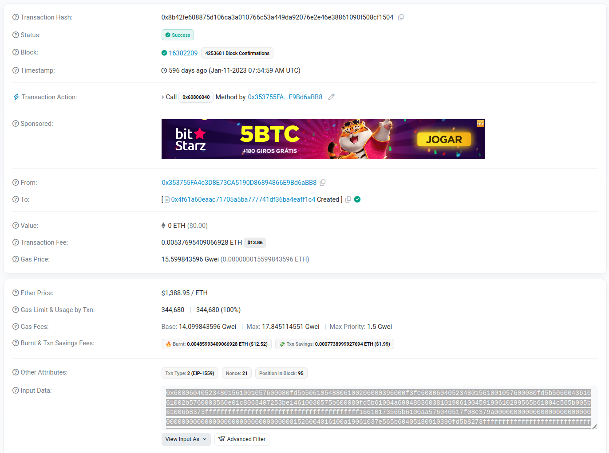
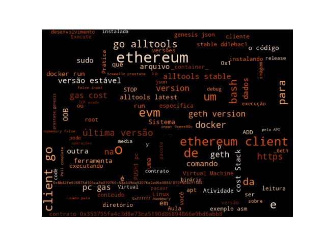

2 Prática: Explorando a Ethereum Virtual Machine (EVM)
Visão Geral
evm e executando alguns exemplos.
2.1 Introdução
Faça a leitura do Capítulo 13: The Ethereum Virtual Machine
A proposta desta prática é vermos o funcionamento da EVM.
2.2 Instalando o evm
Nesta etapa, você instalará o cliente padrão de camada de execução (geth) e outras ferramentas. Iremos utilizar o evm, que é uma interface por linha de comando para a Ethereum Virtual Machine. Baixe e execute o a última versão 64-bit estável do Geth and Tools para seu Sistema Operacional do site Geth downloads page. Para Linux, baixe o arquivo Geth and Tools ou escolha nas guias a versão do seu Sistema Operacional.
O geth e as outras ferramentas podem ser instaladas em sistemas derivados do Debian e Ubuntu com o pacote ethereum:
$ sudo apt-get install -y software-properties-common
$ sudo add-apt-repository -y ppa:ethereum/ethereum
$ sudo apt-get update
$ sudo apt-get install -y ethereumEm outros Sistemas como o Manjaro Linux:
$ sudo pacaur -Ss ethereum
$ sudo pacaur -Ss go-ethereum
extra/go-ethereum 1.14.8-1 [instalado]
Official Go implementation of the Ethereum protocol
$ pacaur -S go-ethereum
atencao: go-ethereum-1.14.8-1 está atualizado -- reinstalando
resolvendo dependencias...
procurando pacotes conflitantes...
Pacotes (1) go-ethereum-1.14.8-1
Tamanho total instalado: 249,48 MiB
Alteracao no tamanho: 0,00 MiB
:: Continuar a instalacao? [S/n]Imagens docker são mantidas no DockerHub para usuários que preferem rodar em um ambiente com container. As seguintes imagens estão disponíveis com todas as ferramentas:
ethereum/client-go:alltools-latestúltima versão de desenvolvimento.ethereum/client-go:alltools-stableúltima versão estável.ethereum/client-go:alltools-{version}versão estável com número de versão específica.ethereum/client-go:alltools-release-{version}última versão estável com um família de versões específica.
Instalação via docker pode ser feita com o comando:
$ docker pull ethereum/client-go:alltools-stable
alltools-stable: Pulling from ethereum/client-go
9ad3caf28a48: Pull complete
9824c27679d3: Pull complete
b8a14d1aed66: Pull complete
Digest: sha256:9b722323bf4a6c147f55fb162b78f54b3a074445e658b1259dee088c382cac51
Status: Downloaded newer image for ethereum/client-go:alltools-stable
docker.io/ethereum/client-go:alltools-stableA execução pode ser feita com o comando docker run e os parâmetros:
$ docker run -it -p 30303:30303 ethereum/client-go:alltools-stable
/ # geth --version
geth version 1.16.2-stable-dd1ebac1
/ # A imagem irá expor as seguintes portas:
8545 TCP, usado pela API HTTP baseada em JSON RPC
8546 TCP, usado pela API WebSocket baseada em JSON RPC
8547 TCP, usado pela API GraphQL
30303 TCP e UDP, usado pelo protocolo P2P para rodar a rede.Nota: se você estiver executando um cliente dentro de um container docker, você deveria montar um volume de dados com um diretório de dados do cliente na pasta /root/.ethereum dentro do container para que ter certeza que os dados baixados serão preservados entre uma reinicialização e outra do container.
Na minha máquina montei o diretório /run/media/rag/DADOS/ethereum no diretório virtual /root/.ethereum, as sincronizações e comandos executados na imagem docker seriam refletidos na base de dados do diretório externo.
$ docker run -it -p 30303:30303 -v /run/media/rag/DADOS/ethereum:/root/.ethereum -w /root/.ethereum ethereum/client-go:alltools-latestPara atualizar as ferramentas para a última versão, basta parar o container e fazer um pull da última versão:
$ docker stop ethereum/client-go:alltools-stable
$ docker pull ethereum/client-go:alltools-latest
$ docker run -it -p 30303:30303 ethereum/client-go:alltools-latestExistem quatro versões diferentes via imagem docker, a última versão de desenvolvimento, a última versão estável ou versões estáveis específicas:
ethereum/client-go: mais recente versão de desenvolvimento (padrão).ethereum/client-go: última versão estável.ethereum/client-go:{version}: é a versão estável para um número de versão específico.ethereum/client-go:release-{version}: é a última versão estável dogethpara uma versão específica.
A execução da última versão seria pelo comando:
$ docker run -it -p 30303:30303 ethereum/client-go:alltools-latestInstruções para outros Sistemas Operacionais podem ser encontradas no site oficial da documentação do Ethereum, artigo Installing Geth.
Verifique se a versão mais nova já não foi instalada. O link Sprouted Seed Vial (v1.16.2) lista as versões.
Na minha máquina está instalada a versão 1.16.2-stable-dd1ebac1, você pode verificar a sua com geth --version ou geth version ou evm --version:
$ evm --version
evm version 1.16.2-stable-dd1ebac1
$ geth --version
geth version 1.16.2-stable-dd1ebac1
$ geth version
Geth
Version: 1.16.2-stable
Git Commit: dd1ebac11757484575ee779381af32f29ce3fbe4
Git Commit Date: 20250804
Architecture: amd64
Go Version: go1.24.5
Operating System: linux
GOPATH=
GOROOT=
$ Para a execução de uma versão específica como a 1.14.12, versão instalada no laboratório, utilize o comando docker, substituindo em {version} com v1.14.12:
$ docker run -it -p 30303:30303 ethereum/client-go:alltools-v1.14.12Para que a evm tenha suporte aos opcodes da versão Shangai. Crie um arquivo genesis.json com o conteúdo:
{
"config": {
"chainId": 9599,
"homesteadBlock": 0,
"eip150Block": 0,
"eip155Block": 0,
"eip158Block": 0,
"byzantiumBlock": 0,
"constantinopleBlock": 0,
"petersburgBlock": 0,
"istanbulBlock": 0,
"berlinBlock": 0,
"londonBlock": 0,
"shanghaiBlock": 0,
"shanghaiTime":0
},
"alloc": {
"0x1c7cd2d37ffd63856a5bd56a9af1643f2bcf545f": {
"balance": "0xffffffffffffffffffffffffffffffffffffffff"
}
},
"coinbase": "0x000000000000000000000000000000000000abcd",
"difficulty": "0x0",
"extraData": "",
"gasLimit": "0xffffff",
"nonce": "0x0000000000000042",
"mixhash": "0x0000000000000000000000000000000000000000000000000000000000000000",
"parentHash": "0x0000000000000000000000000000000000000000000000000000000000000000",
"timestamp": "0x00"
}2.3 Atividade 1: Somando dois valores na Pilha da EVM
- Crie um arquivo
exemplo-001.asmcom as instruções:
PUSH 0x01
PUSH 0x02
ADD
STOPO exemplod e código empilha dos valores \(1\) e \(2\) e faz um ADD, deixando o valor \(3\) no topo da pilha.
- Execute o comando:
$ evm --debug --gas 0xffffff --nomemory=false --input 9ceee80c --prestate ./genesis.json run exemplo-001.asmSerá produzido um resultado semelhante a esse:
INFO [08-29|14:46:00.855] Persisted trie from memory database nodes=1 size=160.00B time="3.352us" gcnodes=0 gcsize=0.00B gctime=0s livenodes=0 livesize=0.00B
#\#\#\# TRACE \#\#\#\#
PUSH1 pc=00000000 gas=16777215 cost=3
PUSH1 pc=00000002 gas=16777212 cost=3
Stack:
00000000 0x1
ADD pc=00000004 gas=16777209 cost=3
Stack:
00000000 0x2
00000001 0x1
STOP pc=00000005 gas=16777206 cost=0
Stack:
00000000 0x3
#\#\#\# LOGS \#\#\#\#Note o conteúdo da Pilha (Stack) sendo modificado com a inserção dos valores \(0x01\) e \(0x02\) e finalizando com a soma \(0x03\).
Uma outra forma de executar é compilando o código:
$ evm compile exemplo-001.asm
600160020100E executando o binário passado diretamente por parâmetro na opção --code 600160020100.
$ evm --debug --gas 0xffffff --nomemory=false --input 9ceee80c --prestate ./genesis.json run --code 600160020100Temos o mesmo resultado:
INFO [08-29|15:17:42.526] Persisted trie from memory database nodes=1 size=160.00B time="4.26us" gcnodes=0 gcsize=0.00B gctime=0s livenodes=0 livesize=0.00B
#\#\#\# TRACE \#\#\#\#
PUSH1 pc=00000000 gas=16777215 cost=3
PUSH1 pc=00000002 gas=16777212 cost=3
Stack:
00000000 0x1
ADD pc=00000004 gas=16777209 cost=3
Stack:
00000000 0x2
00000001 0x1
STOP pc=00000005 gas=16777206 cost=0
Stack:
00000000 0x3
#\#\#\# LOGS \#\#\#\#
$ 2.4 Atividade 2: Executando código de um contrato
Iremos baixar e executar o código de um contrato. Para isso precisaremos recuperar o bytecode de um contrato. Acesse os detalhes da transação 0x8b42fe608875d106ca3a010766c53a449da92076e 2e46e38861090f508cf1504 no etherscan.io.

Copie o código binário do contrato (0x353755fa4c3d8e73ca5190d86894866e9bd6abb8) armazenado, conteúdo do campo Input Data para o arquivo transacao-0x8b42fe608875d106ca3a010766c53a449da9207 6e2e46e38861090f508cf1504-contrato-0x353755fa4c3d8e73ca5190d86894866e9bd6abb8.bin.
Execute a evm com o código do contrato 0x353755fa4c3d8e73ca5190d86894866e9bd6abb8 passando o arquivo com o código binário através da opção --codefile.
evm --debug --gas 0xffffff --nomemory=false --input 9ceee80c --prestate ./genesis.json run --codefile transacao-0x8b42fe608875d106ca3a010766c53a449da92076e2e46e38861090f508cf1504-contrato- 0x353755fa4c3d8e73ca5190d86894866e9bd6abb8.binObserve as alterações do conteúdo de cada estrutura.
2.5 Atividade 3: Outras Operações
Utilize a referência de comandos da EVM para estender o exemplo-001.asm da Atividade \(1\) com operações de escrita e leitura em memória, no storage e outras operações lógicas e aritméticas.
2.6 Relatório
Escreva um relatório sobre a Prática. Formato: Um arquivo PDF com sua identificação.
2.7 Leitura Recomendada
[alertblock]{Leitura Recomendada}
Capítulo 13: The Ethereum Virtual Machine
[/alertblock]
2.8 Considerações Finais
2.9 Próximas Aulas
- Instalando o Cliente Ethereum: Geth.
3 Referências
3.1 Word Cloud
